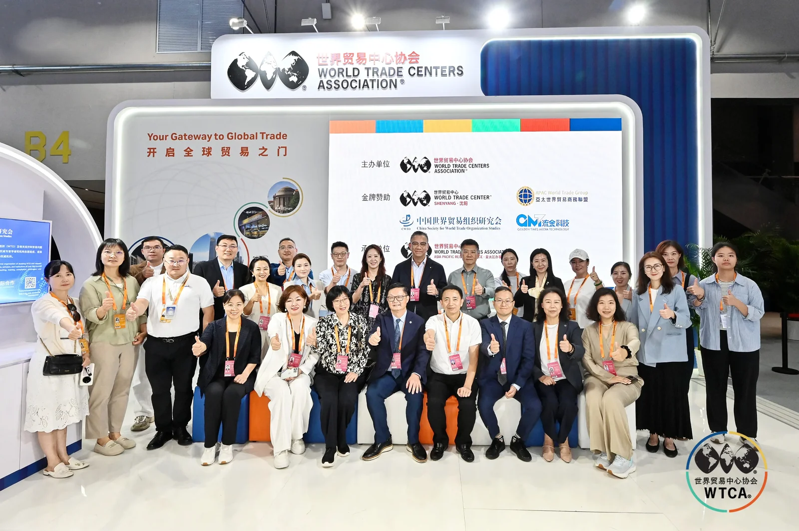
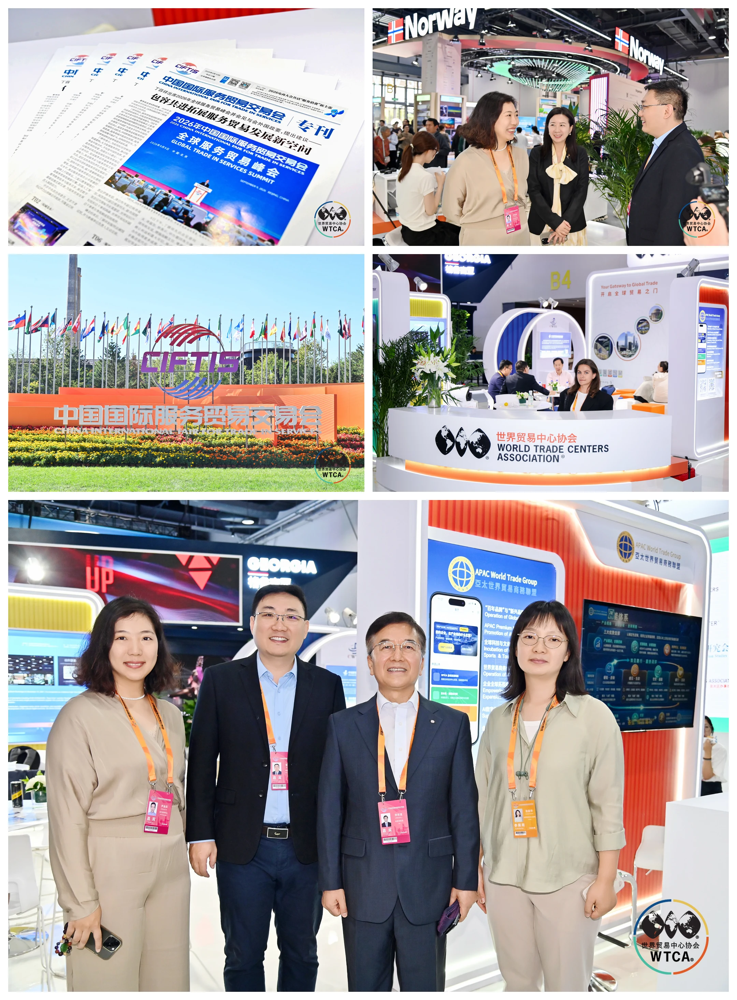
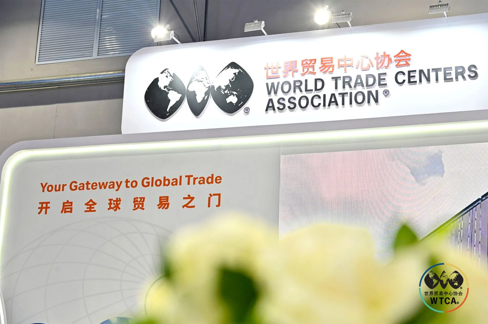

摘要：世界贸易中心协会理事、亚太世界贸易商务联盟会长李明星，南宁世贸同仁尹金蕊、郑婷婷，新加坡世贸秘书长董立鑫，在2026 服贸会 WTCA 展区相聚，围绕全球世贸网络的协同与连接，作了一次轻松而务实的展区交流。

服贸会期间，WTCA 专属展区向来是全球世贸伙伴"相遇"的节点。这一次，南宁世贸组织尹金蕊、南宁世茂中心郑婷婷远道而来，与新加坡世贸团队在展区碰面；世界贸易中心协会理事、亚太世界贸易商务联盟会长李明星也加入这场对话。
一、没有议程，聊的是网络本身
没有固定的议程，也没有通稿式的发布，这场交流聊的更多是网络本身——一座城市的世界贸易中心，如何在 WTCA 全球版图上找到自己的位置，又如何与新加坡这样的枢纽节点彼此借力。
李明星从亚太世界贸易商务联盟的视角谈到，区域世贸网络的协同正在从"各自办活动"走向"跨城共网络"。南宁连接中国—东盟，新加坡连接东南亚与全球，两座节点之间天然存在互补的接口。

二、召集人视角：让一次偶遇变成可持续的连接
我用召集人的视角补了一句：WTC ONE Club 的价值，不在于又多了一场见面，而在于让见面之后真正发生连接——把一次展区的偶遇，变成可持续的跨城合作。南宁的在地资源，加上新加坡的中转与全球接口，正是这类连接最自然的一端。
展会会散，但网络里的节点一旦接通，就不会再断开。这场展区之约，是又一次把"全球网络"从名词变成动词的小小注脚。

关于世界贸易中心协会
世界贸易中心协会（World Trade Centers Association，简称WTCA）成立于1970年，是一个非营利、非政治性机构，致力于全球各地世界贸易中心的建立和有效运营，以此促进地区经济发展、助推国际贸易和投资。协会总部位于美国纽约，全球网络包括近100个国家和地区的300多个世界贸易中心，向成千上万的企业成员和客户提供服务，帮助他们开拓货源、增加客源并提升投融资机会。
关于新加坡世界贸易中心（WTC Singapore）
新加坡世界贸易中心是世界贸易中心协会（WTCA）在新加坡的官方授权成员，依托WTC ONE Club、GlobalX、WTC Fund三大业务板块，致力于连接全球资本、创新资源与市场机会，为企业提供跨境资源对接与全球化落地支持。